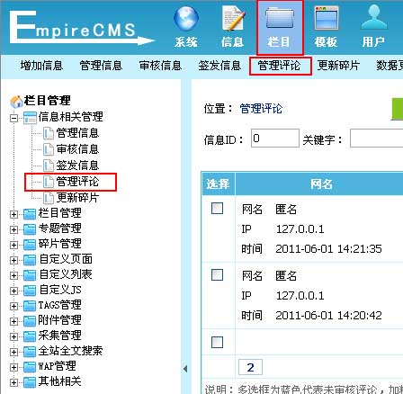
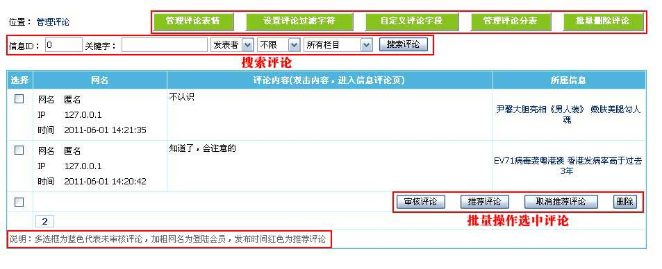
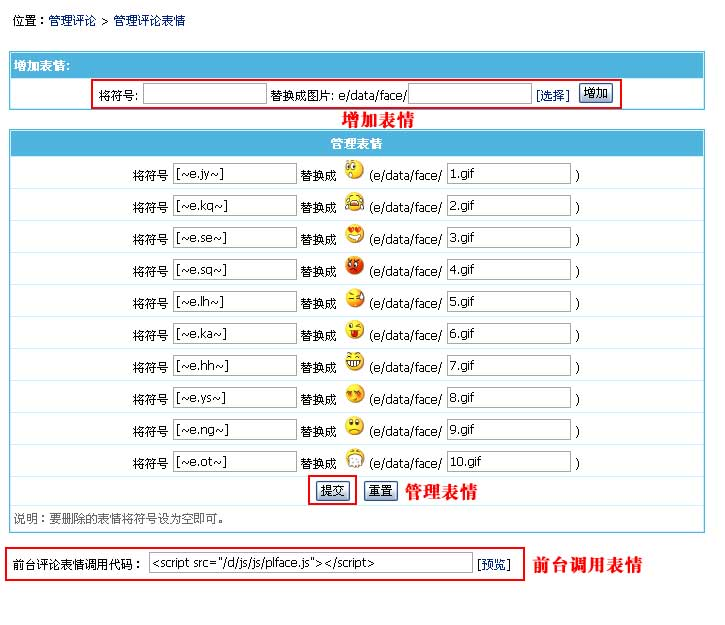
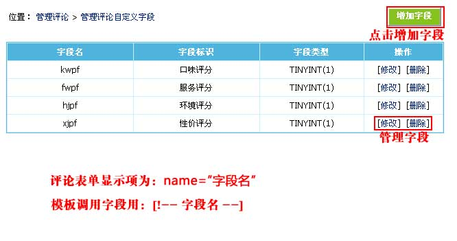
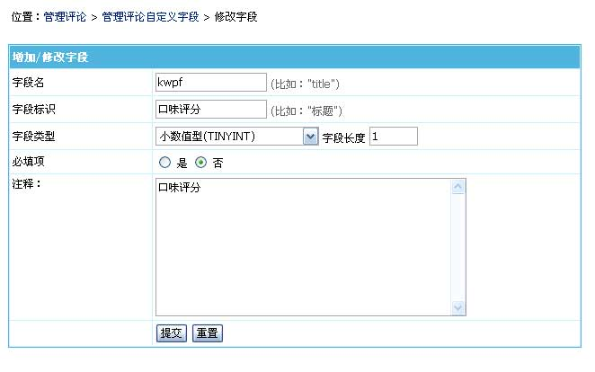
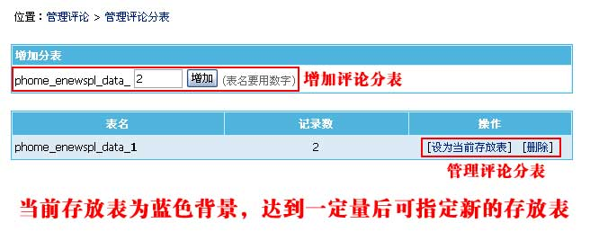
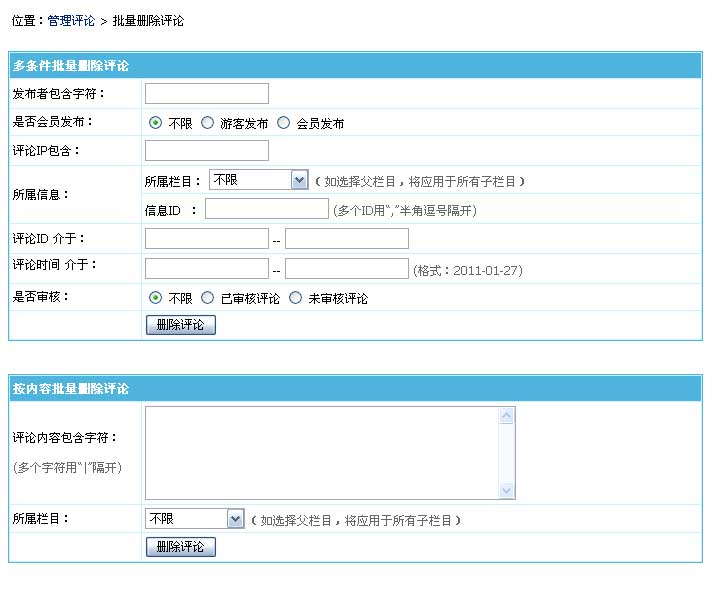
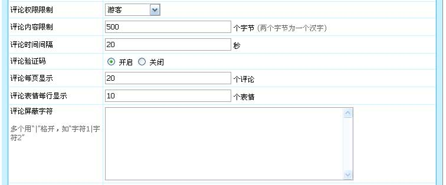
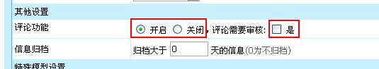

| 包括信息的评论、评论自定义字段、评论分表、评论表情等管理。 |
|
||
| 一、评论相关功能介绍 |
| 自定义评论字段：除了默认的评论内容字段外，用户还可以自己增加评论发布项。 |
| 管理评论分表：评论支持分表，使评论容量更大，速度更快。 |
| 管理评论表情：对评论内容插入的表情进行管理。 |
| 设置评论过滤字符：设置评论不允许提交的内容。 |
| 批量删除评论：按各种条件批量删除评论。 |
| 二、管理评论 | ||||||||||||||||||||||||||||||||
| 1、登录后台，单击“栏目”菜单，选择“管理评论”子菜单，进入管理评论界面：（也可以点击快捷菜单里的管理评论） | ||||||||||||||||||||||||||||||||
|  | ||||||||||||||||||||||||||||||||
| 2、进入管理评论界面，如下图： | ||||||||||||||||||||||||||||||||
|  | ||||||||||||||||||||||||||||||||
|
||||||||||||||||||||||||||||||||
| 三、管理评论表情 | ||||||||
| 1、从管理评论页面点击“管理评论表情”按钮，进入管理评论表情界面： | ||||||||
|  | ||||||||
|
| 四、自定义评论字段 | ||||||||||||
| 1、从管理评论页面点击“自定义评论字段”按钮，进入管理评论自定义字段界面： | ||||||||||||
|  | ||||||||||||
|
||||||||||||
| 2、点击上面的“kwpf”字段的修改，进入字段修改页面： | ||||||||||||
|  | ||||||||||||
|
||||||||||||
| 3、使用范例： | ||||||||||||
| 举例说明：制作“简单的餐馆评分”：http://bbs.phome.net/showthread-13-115815-0.html |
| 五、管理评论分表 |
| 1、从管理评论页面点击“管理评论分表”按钮，进入管理评论分表界面： |
|  |
| 六、批量删除评论 | ||||||||||||||||||||||||
| 1、从管理评论页面点击“批量删除评论”按钮，进入批量删除评论界面： | ||||||||||||||||||||||||
|  | ||||||||||||||||||||||||
|
||||||||||||||||||||||||
| 七、评论相关设置 | ||||||||||||||
| (一)、参数设置 | ||||||||||||||
| 1、登录后台>“系统”>“系统设置”>“系统参数设置”：信息设置，进入评论参数设置界面： | ||||||||||||||
|  | ||||||||||||||
|
||||||||||||||
| (二)、评论是否开启与审核 | ||||||||||||||
| 增加/修改终极栏目时，栏目属性选项设置中设置该栏目是否开启评论，如选择开启，可继续选择评论是否需要审核。 | ||||||||||||||
|  | ||||||||||||||
| (三)、评论模板与表单 | ||||||||||||||
| 评论模板与评论表单制作可查看“美工手册”。 |
| 相关链接 |
| 1、帝国CMS功能解密之：评论自定义字段 |
| 2、帝国CMS功能解密之：内容页评论调用 |